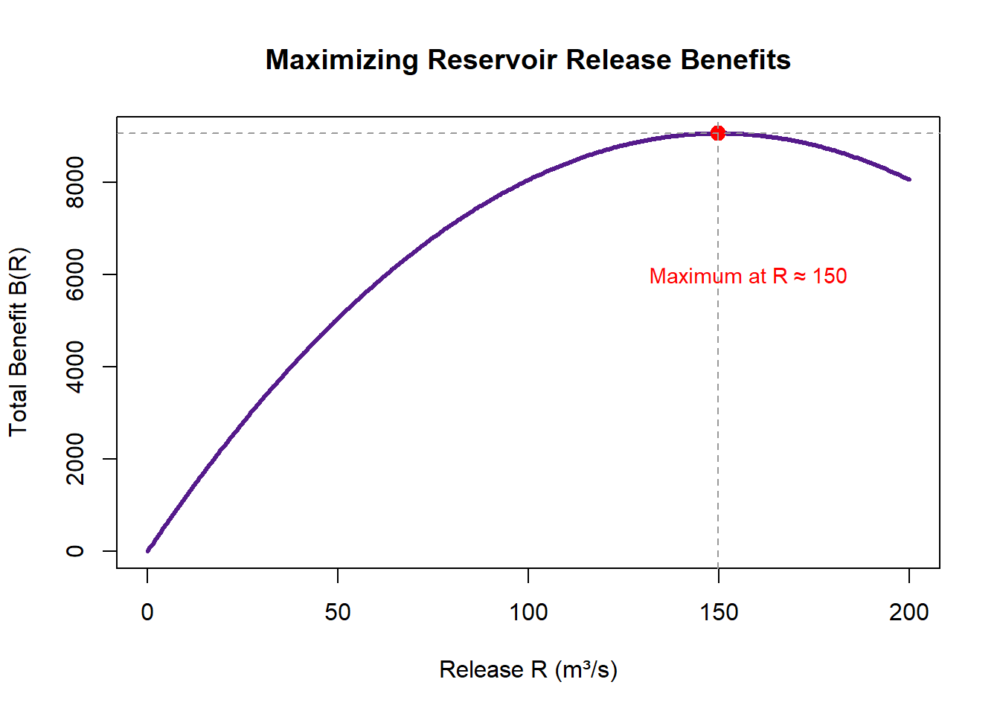

Chapter 6 Optimization in Environmental Systems
6.1 Introduction: Why Optimize?
Every environmental system operates under limits — finite land, finite water, finite energy, finite sunlight, finite budgets. Because of these limits, we constantly face questions of trade-offs and efficiency:
- How can we plant trees to maximize carbon uptake on a fixed amount of land?
- What fertilization level maximizes yield without wasting resources or harming water quality?
- How much water should a reservoir release to minimize downstream flood risk while still meeting hydro power or ecological needs?
- What harvest rate allows a population to sustainably regenerate while still providing maximum yield?
These are all optimization problems — situations where we want to find the best possible value under the constraints of a real system.
6.1.1 Environmental motivations
Optimization naturally arises in environmental science because we often want to:
- Maximize biomass, carbon uptake, recharge rate, biodiversity, habitat quality, photosynthesis, or flow efficiency
- Minimize pollution loads, cost, energy use, heat stress, erosion, runoff, or water loss
- Balance competing ecological or resource constraints when no single quantity can be improved without affecting another
In every case, we need to translate the physical situation into a function — an equation that ties the decision variable (like planting density, harvest rate, flow release, or cost) to an environmental outcome of interest.
6.1.2 Where derivatives enter the story
Once we have a function that represents the quantity we want to optimize, derivatives allow us to understand how that quantity changes as the system changes.
The key observations are:
- A maximum occurs where the function stops increasing and begins decreasing
→ derivative changes from positive to negative
- A minimum occurs where the function stops decreasing and begins increasing
→ derivative changes from negative to positive
- A critical point — where the derivative is zero or undefined — is a candidate for an optimum
- The second derivative reveals whether the function is bending upward (concave up → minimum) or downward (concave down → maximum)
This gives a powerful recipe:
- Write the environmental quantity as a function \(f(x)\).
- Compute the derivative \(f'(x)\).
- Solve \(f'(x) = 0\) to find potential optima.
- Use derivative sign charts or concavity (via \(f''(x)\)) to confirm where the function actually reaches a maximum or minimum.
- Check domain boundaries — many environmental systems have natural limits such as \(x \ge 0\), \(x \le K\), or \(Q_{\text{min}} \le Q \le Q_{\text{max}}\).
6.1.3 Putting it all together
Optimization with derivatives combines:
- Modeling — turning an environmental scenario into mathematics
- Calculus — using derivatives to locate optimal points
- Interpretation — translating those mathematical results back into ecological or environmental meaning
This chapter introduces the core ideas behind optimization, shows how derivatives reveal the structure of optima, and uses environmental case studies to connect mathematics back to real-world systems.
6.2 What Optimization Problems Look Like
At their core, optimization problems follow a consistent structure: we choose a variable to control, define the quantity we care about, and understand the boundaries within which the system must operate. Even the most complex environmental scenario can usually be reduced to this framework.
6.2.1 Key components of any optimization problem
Decision variable(s):
The quantity we can adjust.
Examples: planting density, flow release, fertilizer amount, harvest rate, pollution reduction effort, number of sampling sites.Objective function:
A mathematical expression that represents what we want to maximize or minimize.
This is often written as \(f(x)\) once everything is expressed in terms of a single decision variable.
Examples: biomass per hectare, total cost, pollution concentration, photosynthetic rate, carbon storage, energy use.Constraints:
Realistic boundaries on the decision variable.
These may come from physical limits (non-negative area or population), ecological conditions (maximum carrying capacity, minimum habitat flow), or resource limits (budget, space, time).
Mathematically, constraints define the feasible domain — the set of values where the function actually makes sense.
Together, these three pieces form a complete optimization model: > Choose a variable → express the outcome → restrict the domain.
6.2.2 Environmental examples
Environmental science provides many natural optimization settings because systems are limited by resources, energy, or space:
Maximum sustainable harvest:
Find the harvest level that maximizes long-term yield without collapsing the population.Minimum fertilizer for a target yield:
Reduce nutrient inputs while still achieving a required crop output, balancing cost and water quality concerns.Optimal dam release:
Determine flow levels that minimize flood risk while maximizing hydro power or maintaining habitat conditions.Best planting density for carbon uptake:
Balance competition (too dense) with unused space (too sparse) to maximize carbon gain or biomass production.Minimum treatment cost for safe water quality:
Achieve pollutant targets at the lowest energy or chemical cost.Maximizing recharge area in green infrastructure design:
Choose geometry and material constraints to maximize infiltration.
Each example can be expressed in terms of a function to optimize plus constraints that reflect real environmental limits.
6.2.3 Unconstrained vs. constrained optimization
Unconstrained optimization:
The decision variable can take any real value (or any value in an open interval), and the only candidates for optima are the points where
\[ f'(x) = 0 \quad \text{or where } f'(x) \text{ is undefined}. \]
Many textbook examples fall into this category.Constrained optimization:
Much more common in environmental science.
The domain is restricted — often to a closed interval such as
\[ a \le x \le b. \]
In this case, an optimum may occur:- at a critical point (where \(f'(x) = 0\))
- or at an endpoint (e.g., minimum flow, maximum allowable input)
This reflects real environmental systems: populations cannot be negative, flows are capped at infrastructure limits, land areas are finite, and budgets are fixed.
- at a critical point (where \(f'(x) = 0\))
Understanding whether a problem is constrained or unconstrained shapes the mathematical strategy we use and guides how we interpret the results in ecological or physical terms.
6.3 The Mathematical Structure of Optimization
Optimization is most powerful when we can translate a real scenario into a clean mathematical function. Even complex environmental processes — from population dynamics to hydrology to energy budgets — can often be expressed as a function of a single variable. Once we have that, derivatives provide the tools to identify where the function reaches its highest or lowest value.
6.3.1 Turning a Situation Into a Function
The first challenge in any optimization problem is model-building: taking a real ecological or environmental scenario and expressing it mathematically.
This typically involves three steps:
Translate real-world constraints into equations.
Environmental systems are full of relationships:
land area limits, mass balance constraints, flow continuity, energy budgets, competition functions, or geometric formulas.
These relationships allow us to connect multiple variables and eliminate those we don’t need.Rewrite the objective in terms of a single decision variable.
Most optimization problems begin with several variables (e.g., height and width of an enclosure, flow rate and pollutant load, planting density and growth rate).
Using constraints, we aim to express everything in terms of one variable, often denoted \(x\).
This is crucial because calculus tools for finding maxima/minima rely on single-variable derivatives.Identify common modeling patterns.
Many environmental optimization problems fall into recurring categories:- Geometry: area, perimeter, volume, surface exposure
- Energy or mass budgets: input–output systems, flows, metabolic costs
- Population and growth models: logistic curves, carrying capacity, competition
- Trade-off curves: diminishing returns, saturation, cost–benefit balances
- Rational models: pollutant dilution, hydraulic resistance
Recognizing these patterns helps students quickly set up the right kind of function.
- Geometry: area, perimeter, volume, surface exposure
The goal is to turn a real system into a function \(f(x)\) that meaningfully represents the quantity we care about — whether that’s carbon uptake, cost, biomass, pollutant load, or efficiency.
6.3.2 The Four-Step Optimization Framework
Once the model is built, finding optimal values becomes a structured, repeatable process. This framework mirrors the strategies students learned earlier when analyzing extrema using derivatives.
Define the variables
Identify the decision variable(s) and describe what they represent physically.
Example: \(x =\) planting density (trees per hectare), or \(x =\) flow release (m³/s).Write the objective function
Translate the goal (“maximize carbon uptake”) into an equation \(f(x)\).
This may require ecological assumptions, physical laws, or geometric formulas.Use constraints to express the function in one variable
Apply relationships such as \(A = L \times W\), flow continuity, mass balance, or fixed total resources.
Replace secondary variables using constraints until the objective is written as a single-variable function.Use derivatives to locate maxima/minima
- Compute \(f'(x)\) to identify critical points, where
\[ f'(x) = 0 \quad \text{or where } f'(x) \text{ is undefined}. \] - Use a sign chart or the second derivative test to classify each critical point.
- Evaluate endpoints when the domain is constrained (e.g., \(x \ge 0\), \(x \le K\)).
- Compute \(f'(x)\) to identify critical points, where
This four-step process connects directly to earlier work with critical points, increasing/decreasing behavior, and concavity. Optimization is essentially an applied version of those derivative tools: the mathematics is the same, but now each step maps onto a real environmental decision.
In later sections, we’ll apply this framework to environmental examples such as maximizing carbon uptake, minimizing pollution, optimizing flow releases, and determining sustainable harvest rates.
Concept Check: Common Optimization Mistakes
1. A student sets \(f(x) = 0\) to find the optimal point. What did they do wrong?
Click to reveal answer
They set the function equal to zero instead of the derivative. To find extrema, we solve \(f'(x) = 0\), not \(f(x) = 0\). Setting \(f(x) = 0\) finds the roots (where the function crosses the x-axis), not where it reaches a peak or valley.
2. A student finds a critical point at \(x = 15\) for a planting density problem where the feasible range is \(0 \le x \le 10\). What should they conclude?
Click to reveal answer
The critical point \(x = 15\) is outside the feasible domain, so it can’t be the answer. The optimum must occur at one of the endpoints: either \(x = 0\) or \(x = 10\). Compare \(f(0)\) and \(f(10)\) to determine which is the maximum or minimum.
This is why checking endpoints is critical in real-world optimization — physical constraints often limit the domain.
3. True or false: If there is only one critical point in the domain and it’s a local maximum, it must also be the global maximum.
Click to reveal answer
It depends on the domain. On an open interval, yes — a single local max is the global max. But on a closed interval \([a, b]\), the function value at an endpoint could exceed the local max. Always compare the critical point value with the endpoint values.
6.4 Derivatives and Critical Points in Optimization
Once we express an environmental quantity as a function \(f(x)\), the next step is to understand how that function changes. Derivatives give us a precise way to measure the rate of change and identify where the system switches direction — from increasing to decreasing or vice versa. These turning points are where optima occur.
6.4.1 First Derivative and Candidates for Optima
The first derivative \(f'(x)\) tells us the instantaneous rate of change of the function.
- If \(f'(x) > 0\): the function is increasing → adding more of the variable improves the outcome.
- If \(f'(x) < 0\): the function is decreasing → adding more reduces the outcome.
- If \(f'(x) = 0\): the function’s slope flattens → a possible peak or valley.
- If \(f'(x)\) is undefined: the function may have a cusp or discontinuity, which can also act as an optimum.
The points where
\[
f'(x) = 0 \quad \text{or where } f'(x) \text{ is undefined}
\]
are called critical points. These are the candidates for maxima and minima, but they are not automatically solutions.
Critical points arise naturally in environmental models:
- the peak of logistic growth rate,
- the dilution minimum of pollutants,
- the flow that maximizes hydro power,
- the planting density that maximizes biomass.
In each case, the derivative captures the moment where environmental trade-offs balance out.
6.4.2 Classifying Optima
Finding critical points is only half the story — we must determine whether each point is a maximum, a minimum, or neither. Derivatives provide clear tools for this.
6.4.2.1 First derivative sign chart
A sign chart tracks where \(f'(x)\) is positive or negative around a critical point:
- Positive → zero → negative: the function increases then decreases → local maximum
- Negative → zero → positive: the function decreases then increases → local minimum
This mirrors environmental intuition:
If increasing planting density improves carbon uptake up to a point but then begins to reduce it, the optimal density sits where \(f'(x) = 0\).
6.4.2.2 Second derivative test
The second derivative \(f''(x)\) describes whether the function is bending up or down:
- \(f''(x) < 0\): concave down → a “hill” → maximum
- \(f''(x) > 0\): concave up → a “valley” → minimum
This is especially useful when the sign chart is complicated or the function has multiple components.
6.4.2.3 Local vs. global optima
A local optimum is best only within a neighborhood.
A global optimum is best across the entire feasible domain.
Environmental systems often require global reasoning:
- the maximum sustainable harvest must be the best over all feasible harvest rates, not just near a critical point.
- a pollution load that minimizes cost must be globally optimal within physical limits.
6.4.2.4 The importance of endpoints
If the domain is bounded, optimum values can occur at the boundaries even if \(f'(x) \neq 0\).
Example: flow release might be capped by infrastructure; planting density cannot be negative; pollutant concentration has a regulatory maximum.
Therefore, the full search for optima includes:
- critical points from \(f'(x) = 0\), and
- endpoints, representing physical or ecological limits.
![Graph of a smooth function over a finite interval from x equals negative 3 to x equals 8. The curve has one local maximum and one local minimum at interior critical points, both marked in red. The local maximum occurs where the graph is concave down, and the local minimum occurs where the graph is concave up. The two endpoints of the interval are marked in green and labeled as the global minimum and global maximum. The figure illustrates that local extrema are identified at critical points using concavity, while absolute extrema on a closed interval can occur at endpoints.](environmental-precalculus_files/figure-html/classify-optima-critical-concavity-endpoints-1.png)
Figure 6.1: Classifying optima using critical points, concavity, and endpoints.
6.4.3 Why Critical Points Aren’t Always Solutions
Not every critical point is an optimum. Three common complications arise:
Flat inflection points
Sometimes \(f'(x) = 0\) but the function doesn’t change direction.
Example: a system hits a temporary plateau before continuing to increase.Endpoints outperform internal values
In constrained systems, a boundary may give a better value than any internal point.
Example: maximum infiltration may occur at the minimum soil density or maximum drainage slope.Constraints eliminate internal candidates
A mathematically valid critical point may lie outside a feasible ecological range.
Example: a model predicts an optimal harvest at a negative population — impossible in reality.
These cases reinforce that optimization is always a combination of calculus and context.
![Graph of a function over the interval from x equals negative 3 to x equals 8, with the feasible domain beginning at x equals 0. The region to the right of x equals 0 is shaded to indicate the feasible range, while the region with negative x-values is labeled as unfeasible. A red point at x equals negative 1 marks a critical point outside the feasible domain, showing that it is not a valid solution. An orange point at x equals 2 marks a flat inflection point where the derivative is zero but there is no maximum or minimum. A green point at the right endpoint x equals 8 is labeled as the global maximum. The figure illustrates that not every critical point is relevant in an applied problem, because feasibility and endpoints must also be considered.](environmental-precalculus_files/figure-html/feasible-domain-critical-points-1.png)
Figure 6.2: Why critical points are not always valid solutions.
6.5 Optimization in Finite Domains
Most environmental systems are constrained by clear physical limits. This means the feasible domain for \(x\) is not the entire real line but a closed, bounded interval.
Common examples:
- \(x \ge 0\): populations, density, mass, area, flow
- \(x \le K\): carrying capacity, structural limits
- \(a \le x \le b\): flow ranges, land area, nutrient inputs, treatment rates
Because of these limits:
Endpoints must always be checked.
In a domain like \(0 \le x \le K\), the maximum or minimum value of \(f(x)\) may occur at \(x=0\) or \(x=K\), even if \(f'(x) \neq 0\) there.Critical points are only meaningful if they lie within the domain.
If a critical point lands outside the feasible interval, it must be discarded.Optimization becomes a comparison problem:
Evaluate
\[ f(\text{critical points}), \quad f(\text{endpoints}) \]
and choose the best.
This mirrors how environmental systems function: nature imposes boundaries, and the best solution often emerges at the edge of what is physically or ecologically possible.
6.6 Environmental Case Studies
Environmental systems naturally create optimization problems because they involve limited resources, energetic trade-offs, competition, and physical constraints. Below are four expanded case studies that illustrate how calculus-based optimization can be used to understand and manage ecological and environmental processes. Each highlights the full workflow: modeling → differentiating → analyzing → interpreting results in real-world terms.
6.6.1 Optimizing Planting Density for Maximum Carbon Uptake
Planting density is one of the strongest drivers of carbon storage in reforestation and restoration projects. At low densities, trees have plenty of resources but leave much of the land underutilized. At very high densities, competition for light, nutrients, and water reduces growth. Somewhere between these extremes lies an optimal density.
Modeling approach
- Let \(x\) = number of trees per hectare.
- Biomass per tree decreases as density increases due to competition (often modeled with a decreasing function such as \(e^{-kx}\) or a rational form).
- Total carbon uptake might be modeled as
\[ C(x) = x \cdot g(x), \] where \(g(x)\) is growth per tree.
Using derivatives
- Compute \(C'(x)\) to find the density where the marginal gain from adding an additional tree becomes zero.
- Critical points occur where the benefit of adding trees exactly balances the loss due to competition.
Interpreting the optimum
- If \(C'(x) = 0\) at a moderate density, that represents the biological sweet spot.
- A sign chart or \(C''(x)\) verifies whether the point is a maximum.
- This gives land managers a data-informed target density for restoration plantings.
Worked Example: Optimizing Planting Density for Maximum Carbon Uptake
Tree growth per individual typically declines as density increases. Suppose field data suggest that average biomass per tree declines approximately exponentially with density.
Let:
- \(x\) = number of trees per hectare
- Average carbon uptake per tree follows
\[ g(x) = 20e^{-0.02x} \quad \text{(kg of carbon per tree per year)} \]
Then total carbon uptake per hectare is:
\[ C(x) = 20x e^{-0.02x}. \]
Our goal is to find the planting density \(x\) that maximizes total carbon uptake.
1. Compute the derivative \(C'(x)\)
Using the product rule:
\[ C'(x) = 20 e^{-0.02x} + 20x(-0.02)e^{-0.02x}. \]
Factor common terms:
\[ C'(x) = 20 e^{-0.02x}\left(1 - 0.02x\right). \]
Because \(20e^{-0.02x} > 0\) for all \(x\), the sign of \(C'(x)\) depends only on:
\[ 1 - 0.02x. \]
Set to zero:
\[ 1 - 0.02x = 0 \quad\Rightarrow\quad x = 50. \]
Critical point: \(x = 50\) trees/ha
2. First-derivative sign chart
For \(x < 50\):
\(1 - 0.02x > 0\) → \(C'(x) > 0\) → increasingFor \(x > 50\):
\(1 - 0.02x < 0\) → \(C'(x) < 0\) → decreasing
Thus, \(C(x)\) has a local maximum at \(x = 50\).
3. Confirm with the second derivative
Start with:
\[ C'(x) = 20 e^{-0.02x}(1 - 0.02x). \]
Differentiate:
\[ C''(x) = 20 e^{-0.02x}(-0.02)(1 - 0.02x) + 20 e^{-0.02x}(-0.02). \]
Factor:
\[ C''(x) = -0.4 e^{-0.02x}(1 - 0.02x + 1) = -0.4 e^{-0.02x}(2 - 0.02x). \]
Evaluate at the critical point:
\[ C''(50) = -0.4 e^{-1}(2 - 1) = -0.4 e^{-1} < 0. \]
A negative second derivative indicates concave down, So the critical point is a maximum.
4. Interpretation
- At low densities, adding trees increases total carbon uptake.
- At high densities, competition dominates and total carbon uptake declines.
- The optimal point occurs where the gain from an extra tree is exactly offset by the loss in average growth.
Conclusion:
The model predicts maximum carbon uptake at approximately 50 trees per hectare, giving land managers a data-informed restoration target.
![Two stacked graphs show carbon uptake as a function of planting density and its derivative. The top graph shows total carbon uptake increasing with planting density, reaching a maximum at 50 trees per hectare, and then decreasing for larger densities. The maximum point is marked with dashed horizontal and vertical guide lines. The bottom graph shows the derivative, representing the marginal change in carbon uptake. It is positive before 50 trees per hectare, zero at 50, and negative afterward. The figure illustrates that the maximum in the original function occurs where the derivative changes sign and equals zero.](environmental-precalculus_files/figure-html/planting-density-optimization-2panel-1.png)
Figure 6.3: Optimizing planting density using a function and its derivative.
Concept Check: Interpreting Optimization Results
1. In the carbon uptake model, increasing planting density beyond the optimum decreases total carbon uptake. Name two ecological mechanisms that could explain this.
Click to reveal answer
- Competition for light: At high densities, trees shade each other, reducing photosynthesis per tree faster than the additional trees can compensate.
- Competition for water and nutrients: More trees draw from the same soil resources, stunting individual growth and potentially increasing mortality.
Other possibilities include increased susceptibility to disease or fire in dense stands.
2. A manager says: “The math says 400 trees per hectare is optimal, so we should plant exactly 400.” What important considerations might the math be missing?
Click to reveal answer
Several factors the simplified model doesn’t capture:
- Seedling mortality: If 20% of seedlings die, you might plant 500 to end up near 400.
- Species diversity: Monoculture at optimal density might be ecologically fragile; a mix of species at slightly lower density could be more resilient.
- Spatial variation: Soil quality, slope, and water availability vary across the site — a single density won’t be optimal everywhere.
- Model uncertainty: The quadratic model is an approximation. The true optimum might differ, and a flat region near the peak means a range of densities could perform nearly as well.
Optimization gives a starting point for decision-making, not a final answer.
6.6.2 Minimizing Pollution Concentration Downstream
Pollutant concentration downstream often depends on both the pollutant input and river discharge. Environmental managers frequently need to minimize concentration while staying within physical or regulatory limits.
Modeling approach
- Let \(Q\) = controlled discharge (m³/s) from a reservoir or treatment facility.
- Pollutant concentration commonly follows a dilution model such as
\[ C(Q) = \frac{L}{Q + Q_0}, \] where \(L\) is pollutant load and \(Q_0\) is baseline flow.
- More complex systems may use exponential decay or travel-time corrections, e.g.
\[ C(Q) = L e^{-kQ}. \]
Using derivatives
- Compute \(C'(Q)\) to determine how concentration changes with increasing discharge.
- Optimization reveals the point where increased flow offers diminishing returns.
Constraints
- Minimum flow may be required for habitat.
- Maximum flow may be limited by infrastructure.
- These endpoints must be evaluated alongside critical points.
Interpreting the optimum
- The best discharge may occur at the boundary (maximum allowable flow) or at a point where the reduction in concentration stops being significant.
- This informs water managers how to balance flood control, hydro power, and water quality.
Worked Example: Minimizing Pollution Concentration Downstream
Pollutant concentration downstream depends on both pollutant load and stream flow. Increasing flow typically dilutes pollutants, but flow cannot exceed ecological or engineering limits. We seek the discharge rate that minimizes concentration within these constraints.
Let:
- \(Q\) = controlled discharge (m³/s)
- Pollutant concentration follows a dilution model:
\[ C(Q) = \frac{L}{Q + Q_0}, \] where- \(L\) = pollutant load (kg/s)
- \(Q_0\) = baseline flow from upstream
- \(L\) = pollutant load (kg/s)
Suppose a facility releases a constant pollutant load \(L = 100\) units and upstream flow is \(Q_0 = 20\) m³/s.
Then
\[ C(Q) = \frac{100}{Q + 20}. \]
Our goal is to find the discharge \(Q\) that minimizes concentration over the feasible range
\[
0 \le Q \le 50,
\]
where 0 is the minimum operational flow and 50 is the maximum allowed release.
1. Compute the derivative \(C'(Q)\)
\[ C(Q) = 100 (Q+20)^{-1} \]
Differentiate:
\[ C'(Q) = -100 (Q+20)^{-2}. \]
Because \((Q+20)^2 > 0\), the sign of \(C'(Q)\) is determined entirely by the leading negative sign:
\[ C'(Q) < 0 \quad \text{for all } Q \ge 0. \]
Interpretation:
Concentration always decreases as discharge increases. There are no internal critical points.
2. Endpoint check
Since no internal critical points exist, the minimum must occur at a boundary:
\[ C(0) = \frac{100}{20} = 5 \]
\[ C(50) = \frac{100}{70} \approx 1.43 \]
Thus:
- At minimum discharge \(Q = 0\): concentration is highest.
- At maximum discharge \(Q = 50\): concentration is lowest.
3. Interpretation
- Increasing flow always improves water quality in this simplified model.
- The optimal (minimum concentration) occurs at the maximum allowable discharge, not at an internal critical point.
- This demonstrates an important optimization principle:
When derivatives never change sign, endpoints determine the optimum.
Environmental managers must balance this with ecological flow requirements, hydro power operations, habitat needs, and infrastructure limits.
Conclusion:
The model predicts a minimum pollution concentration at the maximum feasible discharge,
\[
Q = 50 \text{ m³/s}.
\]
![Graph of pollution concentration C of Q as a function of discharge from 0 to 50 cubic meters per second. The curve decreases continuously as discharge increases, showing that concentration is highest at the left endpoint and lowest at the right endpoint. A point at zero discharge is labeled as the endpoint maximum concentration, and a point at 50 cubic meters per second is labeled as the endpoint minimum and best allowed flow. The figure indicates that the derivative is negative everywhere, so there are no internal critical points and the minimum occurs at an endpoint.](environmental-precalculus_files/figure-html/pollution-dilution-endpoint-min-1.png)
Figure 6.4: Minimizing pollution concentration through dilution.
6.6.3 Maximizing Reservoir Release Benefits
Reservoir releases influence hydro power production, ecological flow needs, flood protection, and downstream water availability. An optimal release often balances multiple competing outcomes.
Modeling approach
- Let \(R\) = release rate.
- Hydro power production may scale with
\[ H(R) = \eta R (h - \alpha R), \] where \(h\) is hydraulic head and \(\alpha R\) represents head loss with increasing flow.
- Ecological benefits might increase with flow to a point but then level off.
- A combined benefit function could take the form
\[ B(R) = H(R) + E(R), \] where \(E(R)\) models ecological gains.
Using derivatives
- Compute \(B'(R)\) to find where total benefits peak.
- Constraints such as flood risk or minimum habitat flow determine allowable bounds for \(R\).
Interpreting the optimum
- The derivative identifies the flow where hydro power gains and ecological gains balance most efficiently.
- If the optimum lies outside allowable limits, the best feasible value is at the nearest boundary.
- This helps reservoir operators allocate releases that support both human and ecological needs.
Worked Example: Maximizing Reservoir Release Benefits
Reservoir releases influence hydro power production, ecological flow needs, flood protection, and downstream water availability. An optimal release often balances multiple competing outcomes.
Let:
- \(R\) = release rate (m³/s)
- Hydro power benefits follow
\[ H(R) = \eta R (h - \alpha R) \] where \(h\) is hydraulic head and \(\alpha R\) represents head loss.
- Ecological benefits increase with flow but level off:
\[ E(R) = k(1 - e^{-0.05R}). \]
Total benefits:
\[ B(R) = H(R) + E(R). \]
Our goal is to find the release rate that maximizes total benefits.
1. Compute the derivative \(B'(R)\)
Given:
\[ B(R) = \eta R(h - \alpha R) + k(1 - e^{-0.05R}) \]
Choose example values
\[
\eta = 1,\quad h = 120,\quad \alpha = 0.4,\quad k = 50.
\]
Then:
\[ B(R) = 120R - 0.4R^2 + 50(1 - e^{-0.05R}) \]
Differentiate:
\[ B'(R) = 120 - 0.8R + 50(0.05)e^{-0.05R} \]
\[ B'(R) = 120 - 0.8R + 2.5 e^{-0.05R} \]
Set the derivative equal to zero:
\[ 120 - 0.8R + 2.5e^{-0.05R} = 0 \]
This equation has a single solution near \(R \approx 145\) (verified numerically).
Critical point: \(R \approx 145\) m³/s
2. First-derivative sign analysis
- For small \(R\), \(B'(R) > 0\) → benefits increase
- After the critical point, \(B'(R) < 0\) → benefits decrease
Thus, \(R \approx 145\) is a local maximum.
3. Second-derivative check
\[ B''(R) = -0.8 - 2.5(0.05)e^{-0.05R} \]
\[ B''(R) = -0.8 - 0.125 e^{-0.05R} \]
Since both terms are negative, \(B''(R) < 0\) everywhere.
Therefore the critical point is concave down → a maximum.
4. Interpretation
- At low flows, hydro power and ecological benefits rise quickly.
- At high flows, hydro power suffers head losses and ecological gains level off.
- The best release occurs at the point where increasing flow yields no further net benefits.
Conclusion:
Total benefits peak at approximately 145 m³/s, giving reservoir operators a data-informed release target—unless infrastructure or ecological constraints limit allowable flows, in which case the optimum occurs at the nearest boundary.

Figure 6.5: Maximizing total benefit from reservoir release.
6.6.4 Sustainable Harvest or Foraging Rate
Harvest models naturally produce optimization problems because they involve balancing growth and removal. Removing too little wastes potential yield; removing too much collapses the population. Optimization identifies a sustainable “sweet spot.”
Modeling approach
- For a population following logistic growth,
\[ P'(t) = r P \left(1 - \frac{P}{K}\right). \] - A harvest rate \(h\) removes individuals at a rate \(h\).
- Maximum sustainable yield occurs at the population size where growth is fastest, which we find using derivatives.
Using derivatives
- The logistic growth term \(rP(1 - P/K)\) is maximized when
\[ \frac{d}{dP} \left[rP\left(1 - \frac{P}{K}\right)\right] = 0. \] - This occurs at \(P = K/2\).
- Thus the harvest level is maximal when the population is held around half of carrying capacity.
Interpreting the optimum
- Derivatives provide a biological explanation: growth is slow when populations are too small (limited reproduction) or too large (heavy competition).
- The optimum reflects the point where reproduction rates peak — the ecological balance point between under- and over-harvesting.
Worked Example: Sustainable Harvest or Foraging Rate
Harvest models often reveal natural optimization problems because they balance growth and removal.
If you harvest too lightly, you miss potential yield.
If you harvest too heavily, you collapse the population.
Calculus helps identify the sustainable “sweet spot.”
1. Modeling population growth and harvest
Assume a population with logistic growth:
\[ P'(t) = rP\left(1 - \frac{P}{K}\right), \]
where
- \(r\) = intrinsic growth rate
- \(K\) = carrying capacity
- \(P\) = population size
The sustainable harvest rate is the amount you can remove without causing long-term decline.
At equilibrium under harvesting:
\[ \text{Sustainable yield} = rP\left(1 - \frac{P}{K}\right). \]
This function tells us how much population growth is available to remove without reducing stock over time.
2. Compute the derivative to find the maximum yield
Let:
\[ Y(P) = rP\left(1 - \frac{P}{K}\right). \]
Differentiate:
\[ Y'(P) = r\left(1 - \frac{P}{K}\right) + rP\left(-\frac{1}{K}\right) \]
Simplify:
\[ Y'(P) = r\left(1 - \frac{2P}{K}\right). \]
Set equal to zero:
\[ 1 - \frac{2P}{K} = 0 \quad\Rightarrow\quad P = \frac{K}{2}. \]
Critical point:
\[
\boxed{P = K/2}
\]
This is the population size that maximizes sustainable harvest.
3. Determine whether it is a maximum
Second derivative:
\[ Y''(P) = r\left(-\frac{2}{K}\right) = -\frac{2r}{K} < 0. \]
A negative second derivative means the curve is concave down → this point is a maximum.
4. Interpretation for environmental management
- Growth is low at small populations (few reproductive adults).
- Growth is also low at large populations (strong competition for resources).
- Growth is fastest at intermediate population density, and the logistic model shows this occurs at \(P = K/2\).
- Holding a population at half of carrying capacity produces the maximum long-term sustainable yield.
Conclusion:
The derivative reveals a fundamental biological principle:
\[
\text{Maximum sustainable harvesting occurs at } P = K/2.
\]
This provides managers with a quantitative guideline for sustainable foraging, fishing, or wildlife harvest policies.
![Graph of sustainable yield Y of P as a function of population size from 0 to the carrying capacity. The curve is hump-shaped, starting at zero when the population is zero, increasing to a maximum at half the carrying capacity, and then decreasing back to zero as the population approaches the carrying capacity. The maximum point at P equals K over 2 is marked with a red dot and dashed guide lines. The figure illustrates that the maximum sustainable yield occurs at an intermediate population size rather than at the largest population.](environmental-precalculus_files/figure-html/logistic-yield-maximum-1.png)
Figure 6.6: Maximum sustainable yield in a logistic growth model.
6.7 Common Optimization Patterns
Although environmental optimization problems can appear diverse, many of them fall into a handful of recurring mathematical patterns. Recognizing these patterns helps build intuition and approach new problems with confidence. Each pattern reflects a specific type of physical or ecological trade-off, and each leads to a characteristic type of function that can be analyzed with derivatives.
6.7.1 Geometric Optimization
Many environmental systems involve spatial design: determining shapes, dimensions, or layouts that maximize or minimize some spatial quantity. These problems rely heavily on geometric formulas and often reduce neatly to single-variable functions once constraints are applied.
Typical goals
- Maximize area under a fixed perimeter (e.g., designing riparian buffers).
- Minimize surface area for a fixed volume (e.g., storage tanks or ecological reactors).
- Optimize watershed or wetland shape for maximum infiltration or habitat exposure.
- Determine the best tilt or curvature of solar collectors to maximize radiation interception.
Why optimization matters here Geometric structures influence ecological processes such as temperature regulation, habitat connectivity, infiltration capacity, and energy capture. Optimal shapes can reduce costs while improving ecological performance.
Mathematical features
- Simple polynomial or rational functions.
- Constraints come from geometry (e.g., fixed perimeter, fixed volume).
- Critical points often have clear physical meaning (e.g., a square gives maximum area for a fixed perimeter).
6.7.2 Resource Allocation Models
Environmental decision-making often requires distributing limited resources among competing needs. Optimization provides a principled way to balance costs and benefits, ensuring maximum efficiency with minimal waste.
Common applications
- Allocating fertilizer or irrigation water across fields to minimize cost for a target yield.
- Designing energy budgets for environmental monitoring stations (e.g., solar–battery systems).
- Combining pollution controls (e.g., filters, buffers, and wetland treatment) to achieve regulatory limits at minimum expense.
- Allocating conservation funding to maximize biodiversity preserved.
Why derivatives are useful Marginal returns — how much benefit comes from a small change in a resource — often decrease over time. Derivatives help quantify this by identifying when increasing effort no longer leads to proportional gains.
Mathematical features
- Often involve rational, exponential, or diminishing-returns functions.
- Constraints can include budgets, storage limits, energy requirements, or regulatory caps.
- Optima frequently occur where marginal cost = marginal benefit, a condition visible through setting derivatives equal.
6.7.3 Rate and Growth Optimization
Many ecological or environmental processes change over time, and the rate at which they grow, decay, or spread can have important management implications. Optimization in this context identifies the conditions that maximize or minimize rates rather than amounts.
Examples
- Determining when population growth is fastest.
- Identifying the rainfall rate that maximizes infiltration before runoff begins.
- Optimizing algal growth in aquaculture systems.
- Finding the wind speed that maximizes energy production for turbines.
Classic result
For logistic population growth,
\[
P'(t) = rP\left(1 - \frac{P}{K}\right),
\]
the growth rate is maximized at
\[
P = \frac{K}{2}.
\]
Derivatives reveal this by showing where the rate function switches from increasing to decreasing.
Why these problems matter Understanding optimal growth rates helps support sustainable management, avoid ecological collapse, and identify tipping points in natural systems.
Mathematical features
- Rate functions are rarely linear.
- Derivatives reveal peaks in growth, decay, or efficiency.
- Optima often correspond to ecological balance points.
6.7.4 Time Optimization
Many environmental processes vary cyclically or respond to external forces such as tides, diurnal cycles, or seasonal patterns. Optimization helps identify the “best” or “worst” times for a particular event, process, or intervention.
Typical applications
- Finding when travel time is minimized across a river with varying currents (e.g., least-time paths).
- Identifying the time of day when CO₂ is highest or lowest in urban heat islands.
- Pinpointing peak river discharge during storm events.
- Optimizing sampling schedules to capture maximum variability or detect extreme events.
- Determining the timing that maximizes pollinator activity or photosynthetic efficiency.
How derivatives help
- The time derivative \(f'(t)\) indicates whether a signal is rising or falling.
- Peaks and troughs correspond to times where \(f'(t) = 0\).
- Concavity reveals whether a peak is sharp or broad, which affects ecological interpretation.
Mathematical features
- Often involve sinusoidal, exponential, or polynomial models.
- Optima may repeat (as in seasonal cycles) or occur only once (as in storm hydrographs).
- Time constraints (e.g., daylight hours, tidal windows) create bounded domains.
These patterns help you recognize that despite surface differences, many environmental optimization problems share the same mathematical structure. By mastering a handful of core approaches, results in increasing your ability to tackle a much wider range of applied scenarios.
6.8 Optimization with Constraints
Most environmental optimization problems are not free to take any value of \(x\). Real systems operate within physical, ecological, economic, and regulatory limits, which impose constraints on the model. Understanding how constraints shape feasible solutions is essential because they often determine whether an optimum lies at a critical point or at the edge of the allowable range.
6.8.1 Simple Inequality Constraints
In many cases, constraints come from basic physical or biological rules:
Non-negativity:
\(x \ge 0\)
Populations, concentrations, discharge rates, depths, biomass, and harvest levels cannot be negative.Upper bounds from natural limits:
\(x \le K\)
Carrying capacities, maximum storage, maximum flow, and maximum treatment capacity all impose ceilings on variables.Engineering or infrastructure limits:
Pumps, turbines, reactors, and reservoirs often have minimum and maximum operating ranges.
These inequalities define the feasible domain, the set of values where the model makes sense. Optimization then requires checking:
- Critical points inside the domain, where \(f'(x) = 0\).
- Endpoints, where \(x\) equals the boundary values.
A key lesson:
An optimum outside the feasible domain is not an optimum at all — it must be discarded.
For example, if a model predicts optimal planting density at \(x = -5\), the mathematical procedure is correct but the result is meaningless. The true optimum must then occur at the boundary.
6.8.2 Case Study: Minimizing Cost with an Environmental Constraint
Imagine a water treatment facility that must achieve a target pollutant reduction while minimizing cost. The decision maker controls treatment intensity \(x\), where:
- Cost increases with \(x\).
- Pollutant removal also increases with \(x\), but with diminishing returns.
A simple model might be:
- Cost:
\[ C(x) = a x + b \] - Pollutant concentration after treatment:
\[ P(x) = P_0 e^{-kx} \]
Suppose regulations require
\[
P(x) \le P_{\text{target}}.
\]
This becomes a constraint on \(x\):
\[
x \ge \frac{1}{k} \ln \frac{P_0}{P_{\text{target}}}.
\]
The optimization problem is now:
- Minimize: \(C(x)\)
- Subject to: \(x \ge x_{\min}\)
Because \(C(x)\) increases with \(x\), the least expensive solution is the smallest feasible value — the boundary created by the environmental constraint.
This illustrates a major theme: > Environmental constraints often determine the optimum, even when the unconstrained mathematical optimum lies elsewhere.
Worked Example: Minimizing Treatment Cost Under an Environmental Constraint
Environmental decision-making often requires balancing economic cost with required pollutant removal.
Here we explore a treatment system where increasing treatment intensity improves removal but increases cost.
We will use specific numerical values to make each step concrete:
- Cost function:
\[ C(x) = 40x + 150 \] - Pollutant after treatment:
\[ P(x) = 120 e^{-0.25x} \] - Target pollutant concentration: \(P_{\text{target}} = 30\)
Our task:
Find the least expensive treatment intensity \(x\) that still meets the environmental requirement.
1. Convert the environmental requirement into a constraint on \(x\)
We begin with:
\[ P(x) = 120 e^{-0.25x} \le 30. \]
Solve step-by-step.
Step 1: Divide both sides by 120:
\[ e^{-0.25x} \le \frac{30}{120} = 0.25. \]
Step 2: Take natural logs:
\[ -0.25x \le \ln(0.25). \]
Step 3: Multiply both sides by \(-1\), flipping the inequality:
\[ 0.25x \ge -\ln(0.25). \]
Step 4: Solve for \(x\):
\[ x \ge \frac{-\ln(0.25)}{0.25}. \]
Compute the value:
- \(\ln(0.25) = -1.3863\)
- So:
\[ x_{\min} = \frac{1.3863}{0.25} = 5.545. \]
Thus, the constraint is:
\[ \boxed{x \ge 5.545.} \]
This is the minimum treatment intensity that satisfies regulations.
2. Set up the optimization problem
We want to minimize the cost:
\[ C(x) = 40x + 150. \]
Compute its derivative:
\[ C'(x) = 40. \]
Since \(C'(x) = 40 > 0\) for all \(x\), the cost increases with every additional unit of treatment.
Therefore:
- There is no interior optimum.
- The best solution is simply the smallest feasible \(x\).
Thus,
\[ \boxed{x^{*} = x_{\min} = 5.545.} \]
Cost at this point:
\[ C(x^*) = 40(5.545) + 150 = 372 \text{ (approximately)}. \]
3. Interpretation
- Cost always rises with treatment intensity.
- Environmental requirements impose a minimum treatment level.
- Even though the cost function has no natural minimum, the constraint creates one.
This illustrates a central idea:
Environmental constraints often determine the optimum, even when the mathematical model does not have one on its own.
![Two stacked graphs show cost and pollutant concentration as functions of treatment intensity x. The top graph shows cost increasing linearly as treatment intensity increases. A vertical dashed line marks the smallest feasible treatment level, labeled as the feasible minimum, where cost is minimized while still satisfying the constraint. The bottom graph shows pollutant concentration decreasing as treatment intensity increases. A horizontal dashed line marks the target pollutant level, and the curve meets this target exactly at the same treatment value marked above. The figure illustrates that the lowest-cost feasible solution occurs where the pollutant curve first reaches the required target.](environmental-precalculus_files/figure-html/cost-minimization-constraint-2panel-1.png)

Worked Example: Choosing an Energy-Efficient Building Temperature Set-point
Buildings consume energy for heating and cooling, and the optimal temperature set point balances comfort and energy cost.
Unlike the previous example (where a constraint determined the optimum), this scenario naturally produces an interior optimum: heating too much wastes energy, cooling too much wastes energy, and comfort losses also increase cost in both directions.
Let:
- \(T\) = indoor temperature set point (°C)
- Total “cost” includes energy use and comfort penalties:
\[ C(T) = a(T - T_{\text{amb}})^2 + b(T - T_{\text{pref}})^2 \] where- \(a\) is the energy cost coefficient
- \(b\) is the comfort penalty coefficient
- \(T_{\text{amb}}\) is ambient temperature
- \(T_{\text{pref}}\) is preferred temperature
- \(a\) is the energy cost coefficient
This setup penalizes temperatures too far from outdoor conditions (energy) and temperatures too far from preferred conditions (comfort).
The optimum temperature will lie between \(T_{\text{amb}}\) and \(T_{\text{pref}}\).
For this worked example, use:
- \(a = 1\)
- \(b = 3\)
- \(T_{\text{amb}} = 10^\circ \text{C}\)
- \(T_{\text{pref}} = 22^\circ \text{C}\)
Our goal is to find the indoor temperature \(T\) that minimizes total cost.
1. Write down the cost function
\[ C(T) = 1(T - 10)^2 + 3(T - 22)^2. \]
Combine terms:
\[ C(T) = (T - 10)^2 + 3(T - 22)^2. \]
2. Compute the derivative \(C'(T)\)
Differentiate:
\[ C'(T) = 2(T - 10) + 6(T - 22). \]
Simplify:
\[ C'(T) = 2T - 20 + 6T - 132 = 8T - 152. \]
3. Find the critical point by solving \(C'(T) = 0\)
\[ 8T - 152 = 0 \]
\[ T = \frac{152}{8} = 19. \]
Critical point:
\[
\boxed{T = 19^\circ \text{C}}
\]
4. Second derivative test
\[ C''(T) = 8. \]
Since \(8 > 0\), the function is concave up → the critical point is a minimum.
5. Interpretation
- Heating to \(22^\circ \text{C}\) is comfortable but expensive.
- Keeping the building at the outdoor temperature \(10^\circ \text{C}\) is cheap but uncomfortable.
- The optimum at 19°C represents the best trade-off between energy use and comfort.
This differs from the constrained-treatment example:
Here the optimum arises from balancing competing factors — not from constraints.
6.9 Interpreting and Communicating Solutions
Finding an optimum mathematically is only half the process. Effective environmental decision-making requires interpreting the result within its ecological, physical, and policy context.
6.9.1 Meaning of the optimal value
Students must ask:
- Does this value make sense biologically or physically?
- What assumptions were made?
- What does the optimum represent in the real system?
An optimal harvest level mathematically might occur at a population size below the reproductive threshold. Such a solution would be dismissed in practice.
6.9.2 Sensitivity to system changes
Environmental systems are rarely static. Parameters such as rainfall, temperature, costs, pollutant loads, and species interactions change over time. Good practice includes examining how the optimum shifts when:
- coefficients change,
- constraints tighten or loosen,
- environmental conditions vary, or
- models incorporate uncertainty.
This is especially important when the optimum lies near a boundary, where slight perturbations can dramatically change feasibility.
6.9.3 When mathematically optimal solutions are unrealistic
Sometimes the optimum suggests impossible or undesirable actions:
- Releasing more water than exists in the reservoir.
- Planting trees at densities that exceed physical spacing limits.
- Harvesting at levels that lead to population collapse.
- Operating equipment outside safe ranges.
Students must learn that mathematical solutions require ecological judgment before being implemented.
6.9.4 Guiding environmental decisions
Optimization is most powerful when interpreted thoughtfully:
- It identifies trade-offs clearly.
- It prioritizes efficient and sustainable choices.
- It highlights whether additional investment yields meaningful improvement.
- It provides a transparent basis for policy, engineering, or management actions.
Ultimately, the goal of calculus-based optimization is not only to compute a number, but to use mathematical insight to support better decisions in managing environmental systems.
6.10 Summary: The Big Ideas of Optimization
- Optimization is finding the best outcome under constraints.
- Derivatives identify where systems change direction or balance forces.
- Endpoints and constraints matter just as much as internal critical points.
- Environmental interpretation is essential — the optimum must make sense physically.
- Optimization integrates all major calculus tools: derivatives, sign charts, concavity, limits, and modeling.
6.11 Practice: Optimization in Environmental Systems
Work through the following problems to develop fluency in identifying variables, building objective functions, applying derivatives, and interpreting results.
1. Optimal Tree Spacing
A restoration site plans to plant native trees in rows.
Growth per tree is modeled as:
\[
G(d) = 10d - d^2,
\]
where \(d\) is spacing in meters.
a) Find the spacing that maximizes growth.
b) Interpret the result.
Show Solution
We differentiate: \[ G'(d) = 10 - 2d. \]
Set to zero: \[ 10 - 2d = 0 \quad\Rightarrow\quad d = 5. \]
Since \(G(d)\) is a downward-opening parabola (coefficient of \(d^2\) is \(-1\)), this critical point is a maximum.
Answer: Maximum growth per tree occurs at \(d = 5\) m.
Interpretation:If trees are closer than 5 m, competition reduces growth.
If they are farther apart than 5 m, there is unused space/light.
The 5 m spacing balances competition and resource use.
2. Minimizing Edge Habitat Loss
A rectangular wildlife enclosure must have a fixed perimeter of 200 m.
Interior area supports habitat; long edges increase disturbance.
Your task is to determine the rectangle dimensions that maximize interior area (and thus minimize edge habitat per area).
a) Write expressions for
- the perimeter \(P\) in terms of side lengths \(x\) and \(y\), and
- the area \(A(x, y)\).
b) Use the perimeter constraint to write \(A\) as a function of one variable only.
c) Differentiate your formula and find the critical point that maximizes area.
d) What are the optimal dimensions?
e) Why is this shape ecologically preferred?
Show Solution
Step 1 — Set up the relationships
For a rectangle:
\[ P = 2x + 2y = 200. \]
Solve for \(y\):
\[ y = 100 - x. \]
Area:
\[ A = xy. \]
Step 2 — Express area in a single variable
Substitute \(y = 100 - x\):
\[ A(x) = x(100 - x) = 100x - x^2. \]
Step 3 — Differentiate and classify the critical point
Differentiate the area function:
\[ A'(x) = 100 - 2x. \]
Set the derivative equal to zero to find critical points:
\[ 100 - 2x = 0 \quad\Rightarrow\quad x = 50. \]
Then compute the corresponding value of \(y\):
\[ y = 100 - x = 50. \]
Second-derivative (curvature) check
Differentiate again:
\[ A''(x) = -2. \]
Since
\[ A''(x) = -2 < 0, \]
the area function is concave down for all \(x\).
A concave-down curve has a hill shape, meaning the critical point at \(x = 50\) is a maximum.
Thus the rectangle with maximum area (and therefore minimum edge per unit area) occurs at:
\[ x = y = 50 \text{ m}. \]
Step 4 — Identify the shape
Since \(x = y = 50\),
the maximum-area rectangle is a square.
Interpretation
For a fixed perimeter:
- the square has the largest interior area,
- and therefore the least edge habitat per unit area.
Ecologically, this means:
- less disturbance along boundaries,
- more protected interior habitat,
- better conditions for species sensitive to edge effects.
3. Fastest Algal Growth Temperature
Algal growth rate is modeled as: \[ R(T) = T(30 - T), \] for temperature \(T\) in °C.
a) Find the temperature that maximizes growth.
b) Explain the ecological meaning.
Show Solution
Differentiate: \[ R'(T) = 30 - 2T. \]
Set the derivative equal to zero: \[ 30 - 2T = 0 \quad\Rightarrow\quad T = 15^\circ\text{C}. \]
Now check the second derivative to classify the critical point:
\[ R''(T) = -2. \]
Because
\[
R''(15) = -2 < 0,
\]
the function is concave down at \(T = 15^\circ\text{C}\), confirming that this point is a local (and global) maximum.
Thus, the reaction rate is maximized at
\[
\boxed{T = 15^\circ\text{C}}.
\]
Algae grow fastest at a moderate, optimal temperature.
Lower temperatures slow metabolism; higher ones cause heat stress or enzyme denaturing.
4. Minimizing Pollution Transport Time
In treatment wetlands and natural channels, water depth strongly influences flow speed, which in turn affects how long pollutants remain in the system.
Faster water reduces residence time, flushing contaminants quickly; slower water increases retention, which can improve natural treatment but may also prolong exposure.
Suppose flow speed (m/s) depends on depth \(h\) (m) according to: \[ v(h) = 2h - h^2. \]
This simplified model captures two competing effects: - At very shallow depths, water cannot move quickly. - At very large depths, friction and cross-sectional resistance slow the flow. - Somewhere in between is a depth where flow is fastest.
a) Find the depth that maximizes flow speed.
b) Explain what this depth implies about pollutant retention or removal effectiveness.
Show Solution
Differentiate: \[ v'(h) = 2 - 2h. \]
Set to zero: \[ 2 - 2h = 0 \Rightarrow h = 1. \]
Second derivative: \[ v''(h) = -2 < 0, \] so the function is concave down and \(h=1\) m gives the maximum speed.
Interpretation:
Water moves fastest at a depth of about 1 m.
Shallower or deeper conditions reduce velocity and increase residence time. Depending on management goals, this could:
- enhance pollutant removal in treatment wetlands (longer residence = more settling/bio-degradation), or
- slow down contaminant flushing in restoration channels (longer residence = delayed transport).
5. Optimal Foraging Time
A shorebird feeding at an inter-tidal patch gains energy according to
\[
E(t) = \frac{15t}{t+3},
\]
where \(t\) is the time spent at the patch (\(t \ge 0\)).
Early on, food is abundant and easy to find, but as the bird stays longer, the patch becomes depleted and gain rate slows.
a) Use derivatives to analyze how \(E(t)\) changes with time.
b) Determine whether a finite time \(t\) maximizes \(E(t)\) on the interval \([0,\infty)\).
c) Interpret the result in an ecological context.
Show Solution
Step 1 — Differentiate \(E(t)\)
Start directly with: \[ E(t) = \frac{15t}{t+3}. \]
Use the quotient rule: \[ E'(t) = \frac{(15)(t+3) - 15t(1)}{(t+3)^2} = \frac{15t + 45 - 15t}{(t+3)^2} = \frac{45}{(t+3)^2}. \]
Since \((t+3)^2 > 0\) for all \(t \ge 0\), \[ \boxed{E'(t) > 0\ \text{for all } t \ge 0}. \]
Thus, \(E(t)\) is increasing for all allowable times.
Step 2 — Curvature Check with \(E''(t)\)
Differentiate again: \[ E''(t) = \frac{d}{dt}\left[\frac{45}{(t+3)^2}\right] = 45 \cdot (-2)(t+3)^{-3} = -\frac{90}{(t+3)^3}. \]
Since \((t+3)^3 > 0\), \[ \boxed{E''(t) < 0\ \text{for all } t \ge 0}. \]
This means:
- The function is concave down everywhere
- Gains continue to increase, but with diminishing returns
Step 3 — Does a maximum occur at a finite \(t\)?
Take the limit: \[ \lim_{t\to\infty} E(t) = \lim_{t\to\infty} \frac{15t}{t+3} = 15. \]
So:
- \(E(t)\) approaches 15
- but never exceeds 15
- and never has a critical point (since \(E'(t) \neq 0\))
\[ \boxed{\text{No finite } t \text{ maximizes } E(t) \text{ on } [0,\infty).} \]
The extrema (maximum value approached) is: \[ \sup E(t) = 15. \]
Interpretation
Energy gain rate always increases with time spent at the patch.
However, the marginal gain (slope) drops quickly — this is diminishing returns.
Real birds do not stay indefinitely because they face constraints:
- travel time to the next patch
- increasing predation risk over time
- tidal windows
- daily energy/time budgets
Ecologically, the bird should leave when the marginal gain falls below the benefit of switching patches.
The calculus here shows the biological pattern: always increasing but flattening out, which is exactly the diminishing-return structure assumed in optimal foraging theory.
6. Sustainable Harvest Timing
A recovering fish population grows according to
\[
P(t) = -t^3 + 6t^2,
\]
where \(t\) is the number of years since protection began.
Harvesting is assumed to begin only when the population reaches its maximum.
Your goal is to determine when that maximum occurs, using derivatives.
a) Find the time \(t\) that maximizes the population.
b) Interpret the result ecologically.
Show Solution
Step 1 — Differentiate to find critical points
\[ P'(t) = -3t^2 + 12t. \]
Factor:
\[ P'(t) = -3t(t - 4). \]
Critical points occur when
\[
P'(t) = 0 \quad\Rightarrow\quad t = 0,\; 4.
\]
Both are feasible times since protection began.
Step 2 — Use the second derivative to classify max/min
Differentiate again:
\[ P''(t) = -6t + 12. \]
Evaluate:
At \(t = 0\):
\[ P''(0) = 12 > 0 \quad\Rightarrow\quad \text{local **minimum**.} \]At \(t = 4\):
\[ P''(4) = -24 + 12 = -12 < 0 \quad\Rightarrow\quad \text{local **maximum**.} \]
Thus the population (and therefore the sustainable harvest timing) is maximized at:
\[ \boxed{t = 4 \text{ years}} \]
Step 3 — Compute the maximum population
\[ P(4) = -(4^3) + 6(4^2) = -64 + 96 = 32. \]
Interpretation
- Very early in recovery (\(t = 0\)), the population is small — harvesting would undermine recovery.
- The population peaks around 4 years, providing the best ecological moment to begin harvesting.
- Waiting too long risks drawing from a declining population, which could reduce long-term sustainability.
This example shows how derivatives help identify when a system reaches its biological peak, guiding more sustainable management decisions.
7. Minimizing Irrigation Waste
Crop growth responds strongly to irrigation, but the relationship is rarely linear.
At low irrigation, plants are water-limited and yield is low.
At high irrigation, soils can become waterlogged, nutrients leach out, and roots lose oxygen — reducing yield again.
A simple model of net water benefit (yield gains minus losses from over-watering) is:
\[ W(x) = 40 + 10x - x^2, \]
where:
- \(x\) = irrigation intensity (in consistent units),
- \(W(x)\) = net benefit to crop productivity.
Your goal is to find the irrigation level that maximizes crop benefit while minimizing wasted water.
a) Find the irrigation level \(x\) that maximizes \(W(x)\).
b) Explain why both too little and too much irrigation reduce the benefit.
Show Solution
Differentiate: \[ W'(x) = 10 - 2x. \]
Set the derivative equal to zero: \[ 10 - 2x = 0 \quad\Rightarrow\quad x = 5. \]
Check curvature with the second derivative: \[ W''(x) = -2. \] Since \(W''(x) = -2 < 0\), the graph is concave down, confirming a maximum at \(x = 5\).
Interpretation:
- When \(x < 5\), plants do not receive enough water, and added irrigation improves growth.
- When \(x > 5\), over-watering harms plants or wastes irrigation resources, reducing net benefit.
- The value \(x = 5\) identifies the “sweet spot” where water is used efficiently and yield is highest.
> Optimal irrigation balances plant water needs with soil capacity and avoids waste.
8. Maximizing Carbon Storage
Per-hectare carbon storage: \[ C(d) = 50d - 4d^2, \] where \(d\) is planting density in hundreds of trees per hectare.
a) Find the density that maximizes carbon storage.
b) Explain the trade-off.
Show Solution
Differentiate: \[ C'(d) = 50 - 8d. \]
Set to zero: \[ 50 - 8d = 0 \Rightarrow d = \frac{50}{8} = 6.25. \]
This is a concave-down quadratic ⇒ maximum at \(d = 6.25\).
Since \(d\) is in hundreds of trees per hectare,
optimal density ≈ 625 trees/ha.
Low densities under use space and light; very high densities cause strong competition and mortality.
The optimal density balances these, maximizing total stand carbon.
9. Balancing Hydro power vs. Habitat Flow
Hydro power from a dam: \[ P(Q) = 5Q - 0.1Q^2, \] where \(Q\) is release rate (m³/s).
Habitat constraint:
\[
Q \ge 10 \quad \text{(minimum flow for fish)}.
\]
a) Find the unconstrained optimal \(Q\).
b) Find the optimal feasible release given the constraint.
c) Interpret.
Show Solution
Differentiate: \[ P'(Q) = 5 - 0.2Q. \]
Set to zero: \[ 5 - 0.2Q = 0 \Rightarrow Q = \frac{5}{0.2} = 25. \]
Because the quadratic has a negative leading coefficient, this is a maximum.
Feasible domain: \(Q \ge 10\).
The unconstrained optimum \(Q = 25\) is within the feasible set.
So the optimal feasible release is \(Q = 25\) m³/s.
Interpretation:
- Here, the ecological constraint \(Q \ge 10\) doesn’t change the optimum—hydro power is maximized at a habitat-safe flow.
- In other contexts, the unconstrained optimum might violate habitat needs, in which case operators would be forced to choose a boundary flow that satisfies ecological requirements.
10. Maximizing Soil Carbon Storage Under Depth Limits
Soil organic carbon increases with depth, but only up to a point. Beyond a certain depth, microbial activity and compaction reduce additional carbon gains.
A simple model for carbon stored (in kg/m²) as a function of soil depth \(d\) (in meters) is:
\[ S(d) = 4d^3 - 30d^2 + 60d. \]
However, the site has a physical excavation limit:
\[ 0 \le d \le 5. \]
a) Find all critical points of \(S(d)\) on \([0,5]\).
b) Evaluate \(S(d)\) at the critical points and at the domain endpoints.
c) Identify the depth that maximizes carbon storage.
d) Explain why the boundary, not the critical point, is optimal.
Show Solution
(a) Find all critical points on \([0,5]\)
Differentiate:
\[ S'(d) = 12d^2 - 60d + 60. \]
Solve:
\[ 12d^2 - 60d + 60 = 0. \]
Divide by 12:
\[ d^2 - 5d + 5 = 0. \]
Quadratic formula:
\[ d = \frac{5 \pm \sqrt{25 - 20}}{2} = \frac{5 \pm \sqrt{5}}{2}. \]
Approximate critical points:
- \(d_1 \approx 1.382\)
- \(d_2 \approx 3.618\)
Both lie inside \([0,5]\).
(b) Evaluate \(S(d)\) at critical points and endpoints
Endpoints:
\[ S(0) = 0 \]
\[ S(5) = 4(5^3) - 30(5^2) + 60(5) = 500 - 750 + 300 = 50. \]
Critical point values:
- At \(d_1 \approx 1.382\):
- \(d_1^2 \approx 1.909\)
- \(d_1^3 \approx 2.641\)
\[ S(d_1) \approx 4(2.641) - 30(1.909) + 60(1.382) \] \[ \approx 10.564 - 57.27 + 82.92 = 36.21. \]
- At \(d_2 \approx 3.618\):
- \(d_2^2 \approx 13.089\)
- \(d_2^3 \approx 47.376\)
\[ S(d_2) \approx 4(47.376) - 30(13.089) + 60(3.618) \] \[ \approx 189.50 - 392.67 + 217.08 = 13.91. \]
(c) Identify the maximum
Comparing all values:
| Depth \(d\) | \(S(d)\) (kg/m²) |
|---|---|
| \(0\) | \(0\) |
| \(1.382\) | \(36.21\) |
| \(3.618\) | \(13.91\) |
| \(5\) | 50 (largest) |
\[ \boxed{\text{Maximum carbon storage occurs at } d = 5\ \text{m}.} \]
(d) Why the boundary, not the critical point, is optimal?
Check curvature:
\[ S''(d) = 24d - 60. \]
\(S''(1.382) = 24(1.382) - 60 \approx -26.8 < 0\)
→ local maximum\(S''(3.618) = 24(3.618) - 60 \approx 26.8 > 0\)
→ local minimum
Although \(d \approx 1.382\) gives a local maximum, it is not the largest value on the interval.
Because the feasible domain is restricted to \(0 \le d \le 5\), the global maximum occurs at the endpoint \(d = 5\).
Interpretation:
Even though the carbon curve has a small “hump” near 1.38 m, the site allows digging deeper.
Since carbon continues increasing toward the boundary, the physical constraint determines the optimum—not the calculus critical point.
This illustrates a key optimization theme:
Under domain limits, the global optimum often occurs at a boundary, even when interior critical points exist.
6.12 More Optimization Practice Problems
1. Tree Spacing to Maximize Growth
In a large-scale reforestation project, foresters want to optimize the spacing between newly planted trees. If trees are too close, they compete for resources; if too far apart, overall canopy productivity declines.
Let:
- \(d\): distance to nearest tree (m)
- \(G(d)\): tree growth rate (cm/year)
Growth model:
\[ G(d) = 40d - 2d^2. \]
Your Task
- Find the spacing \(d\) that maximizes tree growth.
- Confirm it is a maximum using the second derivative.
- Interpret why this spacing is ecologically ideal.
Show Solution
Step 1: Differentiate
\[ G'(d) = 40 - 4d. \]
Set to zero:
\[ 40 - 4d = 0 \quad\Longrightarrow\quad d = 10. \]
Step 2: Confirm maximum
\[ G''(d) = -4 < 0, \]
so \(d = 10\) m maximizes growth.
Interpretation
Ten meters gives enough spacing to reduce competition while maintaining canopy structure.
2. River-Edge Wildlife Reserve: Maximize Area
A wildlife refuge is establishing a rectangular habitat enclosure along a straight riverbank.
Because the river forms one boundary, fencing is needed on three sides only.
Let:
- \(x\): width (perpendicular to river)
- \(y\): length (parallel to river)
- Fencing available: 600 m
Constraint:
\[ 2x + y = 600. \]
Area:
\[ A = xy. \]
Your Task
- Rewrite area \(A\) in one variable.
- Find the dimensions maximizing area.
- Explain why these dimensions give the largest possible habitat.
Show Solution
Step 1: Substitute
\[ y = 600 - 2x. \]
\[ A(x) = 600x - 2x^2. \]
Step 2: Differentiate
\[ A'(x) = 600 - 4x = 0 \quad\Longrightarrow\quad x = 150. \]
\[ y = 600 - 300 = 300. \]
Result
- \(x = 150\) m
- \(y = 300\) m
3. Cylindrical Aquatic Tank: Minimizing Surface Area
A greenhouse uses an open-top cylindrical tank to grow aquatic plants. Because material and heating costs increase with total surface area, the team wants to design the tank with the smallest possible surface area while still holding 500 m³ of water.
Let:
- \(r\): radius (meters)
- \(h\): height (meters)
Volume constraint:
\[ V = \pi r^2 h = 500. \]
Surface area for an open-top tank:
\[ A = \pi r^2 + 2\pi r h. \]
Your Task
- Use the volume constraint to express \(A\) as a function of one variable.
- Find the radius \(r\) that minimizes surface area.
- Compute the corresponding height \(h\).
- Provide numerical values (in meters).
Show Solution
Step 1: Use the constraint to eliminate \(h\)
From the volume:
\[ h = \frac{500}{\pi r^2}. \]
Substitute into surface area:
\[ A(r) = \pi r^2 + 2\pi r\left(\frac{500}{\pi r^2}\right) = \pi r^2 + \frac{1000}{r}. \]
Thus:
\[ A(r) = \pi r^2 + \frac{1000}{r}. \]
Step 2: Differentiate and find critical points
\[ A'(r) = 2\pi r - \frac{1000}{r^2}. \]
Set derivative equal to zero:
\[ 2\pi r - \frac{1000}{r^2} = 0. \]
Multiply by \(r^2\):
\[ 2\pi r^3 = 1000. \]
\[ r^3 = \frac{500}{\pi}. \]
\[ \boxed{r = \left(\frac{500}{\pi}\right)^{1/3}}. \]
Numerically:
\[ r \approx 5.43 \text{ m}. \]
Step 3: Second derivative test (check min vs. max)
Differentiate again:
\[ A''(r) = 2\pi + \frac{2000}{r^3}. \]
Since \(r > 0\), both terms are positive:
\[ A''(r) > 0 \quad \text{for all } r > 0. \]
Conclusion:
The critical point occurs where the function is concave up, so it is a minimum.
Step 4: Compute corresponding height
\[ h = \frac{500}{\pi r^2}. \]
\[ r^2 \approx 5.43^2 \approx 29.49. \]
\[ h \approx \frac{500}{3.14159 \cdot 29.49} \approx \frac{500}{92.66} \approx 5.40 \text{ m}. \]
Final Optimal Dimensions
Radius:
\[ \boxed{r \approx 5.43\ \text{m}} \]Height:
\[ \boxed{h \approx 5.40\ \text{m}} \]
Interpretation
Because the second derivative is always positive, surface area is minimized at this single critical point.
The optimal open-top tank is almost perfectly balanced in height and radius, which minimizes material use while maintaining the required volume.
4. Marine Protected Area: Balancing Biodiversity Gains and Patrol Costs
Marine protected areas (MPAs) enhance biodiversity and stabilize fisheries, but larger MPAs require more boundary monitoring. Managers must balance biodiversity benefits with enforcement cost limits.
Suppose the conservation team is designing a circular MPA.
Let:
- \(r\): radius of the MPA (km)
- Biodiversity benefit model:
\[ B(r) = 120r^2 - 5r^3 \] where the quadratic term reflects increasing habitat benefits with area,
and the cubic term models diminishing returns from overly large MPAs. - Patrol cost (proportional to boundary length):
\[ C(r) = 20{,}000(2\pi r) \] - Maximum annual enforcement budget: $500,000
Budget constraint:
\[ C(r) \le 500{,}000. \]
Your Task
- Use the budget constraint to find the maximum feasible radius \(r_{\max}\).
- Maximize the biodiversity function \(B(r)\) and find its critical point.
- Determine whether the optimal radius is feasible given the enforcement budget.
- Explain the ecological meaning of diminishing returns and why “bigger is not always better.”
Show Solution
Step 1: Apply the budget constraint
\[ 20{,}000(2\pi r) = 500{,}000 \]
\[ 40{,}000\pi r = 500{,}000 \]
\[ r_{\max} = \frac{500{,}000}{40{,}000\pi} = \frac{12.5}{\pi} \approx 3.98\ \text{km}. \]
So the radius cannot exceed 3.98 km.
Step 2: Maximize the biodiversity function
\[ B(r) = 120r^2 - 5r^3. \]
Differentiate:
\[ B'(r) = 240r - 15r^2 = 15r(16 - r). \]
Critical points:
\[ r = 0, \quad r = 16. \]
Ignore \(r=0\). The biological optimum is:
\[ r^* = 16\ \text{km}. \]
To verify this is a maximum, compute the second derivative:
\[ B''(r) = 240 - 30r. \]
Evaluate at the critical point:
\[ B''(16) = 240 - 480 = -240 < 0. \]
Thus \(r = 16\) km is indeed a maximum for biodiversity benefit.
Step 3: Check feasibility
Even though \(r^* = 16\) km maximizes biodiversity, it exceeds the budget-limited radius:
\[ r_{\max} \approx 3.98\ \text{km}. \]
So the MPA cannot be built at the biological optimum.
The best feasible radius is therefore:
\[ \boxed{r = r_{\max} \approx 3.98\ \text{km}}. \]
Step 4: Compute biodiversity at the feasible radius
\[ B(r_{\max}) = 120(3.98)^2 - 5(3.98)^3. \]
\[ 3.98^2 \approx 15.84,\qquad 3.98^3 \approx 63.13. \]
\[ B(r_{\max}) \approx 1900.8 - 315.65 \approx 1585.2. \]
Interpretation
- The biological optimum (16 km) lies far outside what the enforcement budget can support.
- The term \(-5r^3\) models diminishing returns: very large MPAs provide less additional biodiversity benefit per km².
- Because surveillance cost grows with perimeter, the budget—not ecology—limits final MPA size.
- The optimal feasible design is therefore the largest radius allowed by the budget constraint, here about 3.98 km.
This mirrors real-world MPA planning: ecological goals often exceed available financial resources.
5. Circular Irrigation System: Minimizing Total Water Cost
A farmer is installing a center-pivot circular irrigation system to water a field.
Larger irrigation radii water more land, but they also become less efficient: the outer sprinklers must operate at higher pressure, water evaporates more during spraying, and runoff losses increase. As a result, the cost per unit area increases with radius.
Let:
- \(r\): radius of the irrigated field (meters)
- \(C(r)\): cost per unit area (dollars per square meter)
- \(T(r)\): total irrigation cost (dollars)
Cost per unit area increases linearly with radius:
\[ C(r) = 100 + 0.5r. \]
Since the area of the irrigated region is \(\pi r^2\), the total cost is:
\[ T(r) = (\pi r^2)(100 + 0.5r). \]
This creates a trade off: a larger radius waters more land but has much higher marginal cost, while a smaller radius waters less land but is more efficient.
Your Task
- Differentiate \(T(r)\) to find any critical points. Which ones make sense?
- Use the second derivative to determine whether a minimum exists.
- Provide a practical recommendation to the farmer based on the mathematics and context.
Show Solution
Step 1: Expand the total cost function (optional for clarity)
\[ T(r) = \pi r^2(100 + 0.5r) = 100\pi r^2 + 0.5\pi r^3. \]
This form makes differentiation easier.
Step 2: Differentiate to find critical points
\[ T'(r) = 200\pi r + 1.5\pi r^2. \]
Factor:
\[ T'(r) = \pi r(200 + 1.5r). \]
Set \(T'(r) = 0\):
\[ \pi r(200 + 1.5r) = 0. \]
Critical points occur when:
- \(r = 0\)
- \(200 + 1.5r = 0 \quad \Rightarrow \quad r = -\frac{200}{1.5} \approx -133.3\)
Interpretation:
- \(r = 0\) is not physically meaningful for an irrigation system.
- The only other critical point is negative and therefore infeasible.
Thus there are no positive-radius critical points.
Step 3: Use the second derivative to determine behavior
Differentiate again:
\[ T''(r) = 200\pi + 3\pi r. \]
For all \(r > 0\):
\[ T''(r) = 200\pi + 3\pi r > 0. \]
Since \(T''(r) > 0\) for every positive radius, the function is:
- Always increasing
- Strictly concave up
This means there is no interior minimum for \(r > 0\).
Conclusion and Practical Recommendation
Because \(T(r)\) increases for every positive \(r\):
- The smallest radius produces the lowest total cost,
- Larger radii are always more expensive because both area and inefficiency grow with radius.
Recommendation:
Use the smallest feasible radius permitted by the irrigation equipment and agricultural needs.
This aligns with the model: expanding irrigation radius increases cost at an accelerating rate.
6. Under story Light Optimization in a Forest Restoration Project
In ecological restoration work, the spacing of canopy trees is crucial for determining the amount of light that reaches the under story.
If trees are planted too closely, the canopy closes too quickly and shades out young shrubs, forbs, and tree seedlings.
If spacing is too wide, the site may become dominated by invasive grasses, and the developing forest may lose structural complexity.
To explore this trade-off, a restoration team models the percent of full sunlight reaching the under-story as a function of the distance \(d\) (in meters) between canopy trees:
\[ L(d) = 60d - 3d^2. \]
- The linear term \(60d\) reflects the increase in light availability as canopy trees are spaced further apart.
- The quadratic term \(-3d^2\) captures the diminishing returns and eventual decline: if trees are too far apart, under-story plants may be exposed to excessive light, drying out soil and harming shade-tolerant species.
The goal is to find the optimal spacing for maximizing usable under-story light.
Your Task
- Find the spacing \(d\) that maximizes under-story light availability.
- Confirm the result using the second derivative test.
- Explain why this spacing makes ecological sense.
Show Solution
Step 1: Differentiate to find critical points
\[ L(d) = 60d - 3d^2. \]
\[ L'(d) = 60 - 6d. \]
Set the derivative equal to zero:
\[ 60 - 6d = 0 \quad\Longrightarrow\quad 6d = 60 \quad\Longrightarrow\quad d = 10\ \text{meters}. \]
This is the candidate for maximum light availability.
Step 2: Apply the second derivative test
\[ L''(d) = -6. \]
Because:
\[ L''(10) = -6 < 0, \]
the function is concave down at the critical point.
Therefore, \(d = 10\) meters gives a local (and global) maximum for under-story light.
Step 3: Ecological Interpretation
- At smaller spacings (e.g., 4–6 m), canopy trees shade each other, reducing under-story light.
- At larger spacings (e.g., 14–18 m), the site becomes too exposed, drying soil and stressing shade-adapted forest species.
- The model suggests that 10 meters strikes the best balance—enough canopy separation to let light penetrate, but not so much that under-story vegetation becomes overexposed.
This result aligns with many forest restoration guidelines, where 8–12 m spacing is often recommended to maximize diversity of shade-tolerant plants, early successional shrubs, and tree seedlings.
7. Compost Bin With Square Base: Minimizing Construction Cost
A community garden is building a compost bin to process food scraps and plant material.
The bin will have:
- a square base of side length \(l\) (meters)
- four rectangular sides of height \(h\) (meters)
- no lid, to allow oxygen flow
- a required volume of 1.5 m³
Because the compost is heavy, the base must be built from a stronger, more expensive material.
The sides can be made from a lighter, cheaper material.
Material costs:
- Base: $30 per m²
- Sides: $20 per m²
Volume constraint:
\[ l^2 h = 1.5. \]
Your Task
- Build the total cost function yourself:
- compute the cost of the base,
- compute the cost of all four sides,
- combine them into one expression \(C(l, h)\).
- compute the cost of the base,
- Use the volume constraint to rewrite your cost function in a single variable.
- Differentiate to find the cost-minimizing base length \(l\).
- Compute the corresponding height \(h\).
- Use the second derivative test to confirm that you found a minimum.
- Interpret why these dimensions minimize material cost.
Show Solution
Step 1: Build the cost function
- Base area = \(l^2\), cost = \(30l^2\).
- Each side has area \(lh\), and there are 4 sides.
Cost of sides:
\[ 4lh \cdot 20 = 80lh. \]
Total cost:
\[ C(l, h) = 30l^2 + 80lh. \]
Step 2: Use the volume constraint to eliminate \(h\)
Volume requirement:
\[ l^2 h = 1.5 \quad\Longrightarrow\quad h = \frac{1.5}{l^2}. \]
Substitute into the cost function:
\[ C(l) = 30l^2 + 80l\left(\frac{1.5}{l^2}\right) = 30l^2 + \frac{120}{l}. \]
Step 3: Differentiate to find the critical point
\[ C'(l) = 60l - \frac{120}{l^2}. \]
Set to zero:
\[ 60l - \frac{120}{l^2} = 0. \]
Rearrange:
\[ 60l = \frac{120}{l^2} \quad\Longrightarrow\quad l^3 = 2. \]
\[ l = \sqrt[3]{2} \approx 1.26\ \text{m}. \]
Step 4: Compute the corresponding height
\[ h = \frac{1.5}{l^2} = \frac{1.5}{(\sqrt[3]{2})^2} \approx 0.94\ \text{m}. \]
Step 5: Second derivative test
\[ C''(l) = 60 + \frac{240}{l^3}. \]
For any \(l > 0\), both terms are positive:
\[ C''(l) > 0. \]
Therefore the critical point is a minimum.
Final Cost-Minimizing Dimensions
Base length:
\[ l \approx 1.26\ \text{m} \]Height:
\[ h \approx 0.94\ \text{m} \]
Interpretation
The base is made from the more expensive material, so the optimal design avoids making it too large.
However, making \(l\) too small forces the height \(h\) to increase rapidly, which increases the total side-wall area.
The optimal point balances:
- more expensive base area vs.
- less expensive side area.
This trade-off produces a bin that is slightly wider than it is tall, minimizing total material cost while still achieving the required volume.
8. Wetland Buffer Optimization With 3-Sided Fence
Wetland buffers protect water quality, filter storm water, provide habitat, and support nutrient cycling.
A conservation team is constructing a rectangular wetland buffer along a riverbank. Because the river forms one boundary, fencing is needed on only three sides:
- one length (parallel to the river), and
- two widths (perpendicular to the river).
They have 90 meters of fencing.
Let:
- \(x\): width of the buffer (m)
- \(y\): length of the buffer along the river (m)
The ecological benefit of the buffer is modeled as:
\[ B(x, y) = 3xy - x^3, \]
where:
- \(3xy\) represents increasing ecological services as buffer area grows
- \(-x^3\) represents diminishing wetland function if the buffer becomes too wide, transitioning into upland habitat
Your Task
Create the fencing constraint yourself.
Use the fact that the buffer has two widths and one length to build an equation relating \(x\), \(y\), and the available fencing (90 m).Solve your constraint for \(y\).
Substitute the constraint into \(B(x,y)\) to rewrite the benefit as a function of one variable, \(B(x)\).
Find the width \(x\) that maximizes ecological benefit.
Use the second derivative test to confirm it is a maximum.
Compute the corresponding optimal length \(y\).
Explain why this combination of dimensions makes ecological sense.
Show Solution
Step 1: Student-generated constraint
Three sides require fencing:
- two widths: \(x + x = 2x\)
- one length: \(y\)
Total fencing is 90 m:
\[ 2x + y = 90. \]
Solve for \(y\):
\[ y = 90 - 2x. \]
Step 2: Substitute into the benefit function
\[ B(x) = 3x(90 - 2x) - x^3. \]
Expand:
\[ B(x) = 270x - 6x^2 - x^3. \]
Step 3: Differentiate to find critical points
\[ B'(x) = 270 - 12x - 3x^2. \]
Set to zero:
\[ 270 - 12x - 3x^2 = 0. \]
Divide by 3:
\[ 90 - 4x - x^2 = 0. \]
Rearrange:
\[ x^2 + 4x - 90 = 0. \]
Solve using the quadratic formula:
\[ x = \frac{-4 \pm \sqrt{16 + 360}}{2} = -2 \pm \sqrt{94}. \]
Only the positive solution is meaningful:
\[ x = -2 + \sqrt{94} \approx -2 + 9.70 \approx 7.70\ \text{m}. \]
Step 4: Second derivative test
\[ B''(x) = -12 - 6x. \]
Evaluate at \(x = 7.70\):
\[ B''(7.70) = -12 - 46.2 = -58.2 < 0. \]
Since the second derivative is negative, the critical point is a maximum.
Step 5: Compute the corresponding length
\[ y = 90 - 2x = 90 - 2(7.70) \approx 90 - 15.4 \approx 74.6\ \text{m}. \]
Final Optimal Buffer Dimensions
Width:
\[ x \approx 7.70\ \text{m} \]Length:
\[ y \approx 74.6\ \text{m} \]
Interpretation
- Increasing buffer size improves filtration, wildlife movement, and nutrient uptake.
- But very large widths push the buffer away from wetland conditions and into upland habitat, reducing wetland-specific ecological benefits.
- The model’s \(-x^3\) term captures habitat transition and diminishing returns, causing the benefit to peak at a moderate width.
- The optimal design is therefore long and moderately wide, which maximizes wetland function while fitting within the fencing limit.
This pattern reflects real restoration practices:
> Long, continuous buffers near waterways often provide more ecological value than extremely wide buffers that extend far from the water’s edge.
9. Designing a Wildlife Corridor With Fixed Fencing
Wildlife corridors help animals move safely between habitat patches, reducing fragmentation and supporting long-term population resilience.
A conservation team is planning a rectangular wildlife corridor along the edge of a restored forest. The available land is flexible, but the project is strictly limited by the amount of fencing the team can afford.
You are given:
- The corridor has length \(L\) (running east–west along the forest edge)
- The corridor has width \(W\) (extending into the restoration zone)
- The team has 300 meters of fencing total
\[ 2L + 2W = 300. \]
The expected ecological benefit of the corridor—based on species movement models and habitat suitability metrics—is:
\[ B(L, W) = 4LW - 0.05L^2. \]
This function reflects two interacting ecological effects:
- Increasing area (\(LW\)) increases movement opportunities and reduces isolation.
- Very long, narrow corridors decrease benefit (via the \(-0.05L^2\) term) because bottlenecks increase edge exposure and reduce effective habitat.
Your Task
- Use the fencing constraint to rewrite the benefit function \(B\) in one variable.
- Find the dimensions \((L, W)\) that maximize biodiversity benefit.
- Briefly interpret the result in ecological terms:
- Does the optimal design prefer length or width?
- How does the fencing constraint shape the corridor layout?
- Does the optimal design prefer length or width?
Show Solution
Step 1: Use the constraint
\[ 2L + 2W = 300 \Rightarrow W = 150 - L. \]
Step 2: Substitute into \(B\)
\[ B(L) = 4L(150 - L) - 0.05L^2 = 600L - 4L^2 - 0.05L^2 = 600L - 4.05L^2. \]
Step 3: Differentiate
\[ B'(L) = 600 - 8.1L. \]
Set to zero: \[ 600 - 8.1L = 0 \Rightarrow L = \frac{600}{8.1} \approx 74.07. \]
Width: \[ W = 150 - L \approx 150 - 74.07 = 75.93. \]
Step 4: Interpretation
A near-square shape maximizes benefit because it increases interior area relative to edge effects.
Optimal dimensions:
- \(L \approx 74.1\) m
- \(W \approx 75.9\) m
10. Wetland Treatment Basin: Maximizing Pollutant Removal
Constructed wetlands remove pollutants by slowing water and increasing contact with plants and microbes.
An engineering team is designing a treatment basin whose performance depends on:
- Surface area \(A\) (m²)
- Average depth \(d\) (m)
A simplified pollutant-removal model is:
\[ R(A, d) = A d - 3d + 10\sqrt{d}. \]
Interpretation:
- \(A d\): more total water processed → more removal
- \(-3d\): very deep water reduces oxygen and light
- \(10\sqrt{d}\): moderate depth boosts residence time with diminishing returns
The basin must hold a fixed volume of 600 m³:
\[ A d = 600 \quad\Longrightarrow\quad A = \frac{600}{d}. \]
Engineering guidelines require:
\[ d \ge 1 \quad \text{(minimum safe depth)}. \]
Your Task
- Use the volume constraint to rewrite \(R\) in a single variable.
- Find the depth \(d\) that maximizes pollutant removal.
- Compute the corresponding surface area \(A\).
- Explain why the optimum falls inside the feasible region.
Show Solution
Step 1: Substitute the constraint
\[ R(d) = \left(\frac{600}{d}\right)d - 3d + 10\sqrt{d} = 600 - 3d + 10\sqrt{d}. \]
Step 2: Differentiate
\[ R'(d) = -3 + \frac{10}{2\sqrt{d}} = -3 + \frac{5}{\sqrt{d}}. \]
Set to zero:
\[ -3 + \frac{5}{\sqrt{d}} = 0 \quad\Longrightarrow\quad \frac{5}{\sqrt{d}} = 3 \]
\[ \sqrt{d} = \frac{5}{3} \quad\Longrightarrow\quad d = \frac{25}{9} \approx 2.78. \]
This is within the feasible region \(d \ge 1\).
Step 3: Confirm it is a maximum
Second derivative:
\[ R''(d)= -\frac{5}{2} d^{-3/2} < 0 \]
for all \(d > 0\), so the critical point is a global maximum on the feasible domain.
Step 4: Compute the optimal area
\[ A^{*} = \frac{600}{d^{*}} = \frac{600}{25/9} = 600 \cdot \frac{9}{25} = 216\text{ m}^2. \]
Final Optimal Design
Depth:
\[ d^{*} = \frac{25}{9} \approx 2.78 \text{ m} \]Area:
\[ A^{*} = 216 \text{ m}^2 \]